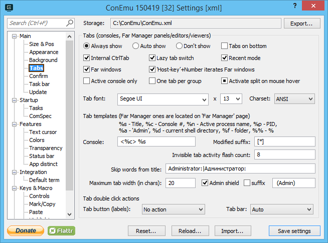

Settings: Tabs

Tabs (panels, editors, viewers)
- Always show
- Auto show
- Don't show
Tabs on bottom
Internal CtrlTab Handle CtrlTab and CtrlShiftTab internally (by ConEmu). These keystrokes will not be sent to console window, but You can easily switch between consoles (panels).
Lazy tab switch When checked - real window switching will be performed on Ctrl depress
Recent mode Switch first between recent tabs. You may still switch between tabs in standard manner using Left/Right (after CtrlTab), while Ctrl is still presses.
Hide disabled tabs Hide tabs, wich can't be activated. E.g. hide Far Manager editors while executing cmd.exe
Far windows Show all Far Manager windows (panels, editors, viewers) instead of one tab for one console
‘Host-key’+Number iterates Far windows Iterate opened Far windows with ‘Host-key’+Number
Active console only Show tabs from active console only
One tab per group Show only one tab for all splits in the group
Activate split on mouse over When several panes (splits) are visible simultaneously activate console with mouse over, 3rd-state - match ‘Active window tracking’ system settings
Tabs font
RTEXT
Tab templates
%s - Title, %c - Console #, %n - Active process name, %p - PID, %a - ‘Admin’, %% - %
Template Common tab template (any console program except Far Manager)
LTEXT
Skip words from title
Maximum tab width (in chars)
Admin shield When this is checked - ‘Shield’ icon will be shown in tabs, started ‘As administrator’
suffix When this is checked - specified suffix will be appended in tabs titles, started ‘As administrator’. You may choose insertion place with ‘%a’ var, otherwise suffix will be at the tab end.
Tab double click actions
LTEXT
RTEXT
When you double click on the tab...
When you double click on the free space of tab bar... ‘Auto’ means ‘Maximize/Restore’ when caption is hidden and ‘Open new shell’ when caption is visible